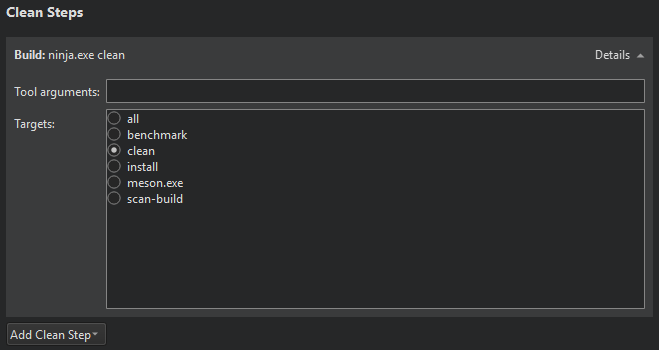

Meson Build Configuration
Specify build settings for the selected kit in Projects > Build & Run > Build > Build Settings.
Meson builds projects in the directory specified in the Build directory field.
Build settings are grouped by category. You can modify all settings, except backend, which is forced to Ninja, buildtype, debug, and optimization to ensure compatibility with Qt Creator.
To modify a setting, double-click it. Modified settings are formatted in bold until you select Apply configuration changes to apply them. This triggers meson configure. If problems arise, select Wipe Project to fix the build directory configuration.
Meson supports cross-compiling in addition to native building. Qt Creator generates a native build file for you. To use a custom native file or a cross file instead, specify the file name in Parameters. For example, --cross-file cross_file.txt.
Meson Build Steps
Qt Creator builds Meson projects by running ninja -v target.
You can add arguments and targets for the build command in Build Steps.
The build errors and warnings are parsed and displayed in Issues.
Meson Clean Steps
When building with Meson, you can add arguments and targets for the clean command in Clean Steps.

The build errors and warnings are parsed and displayed in Issues.
See also Activate kits for a project, Configure projects for building, Configure projects for running, Open projects, Configuring projects, and Meson.